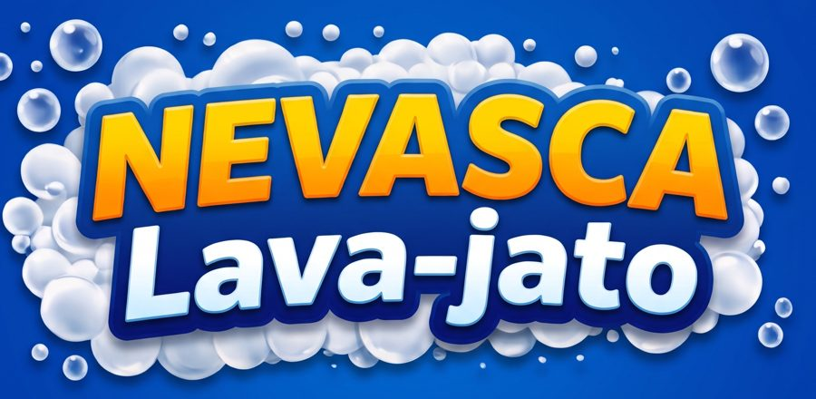
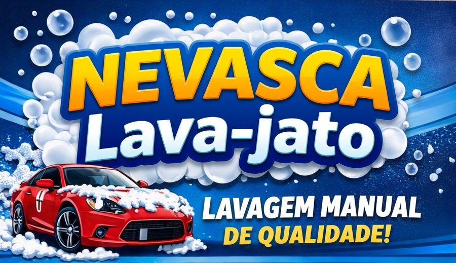
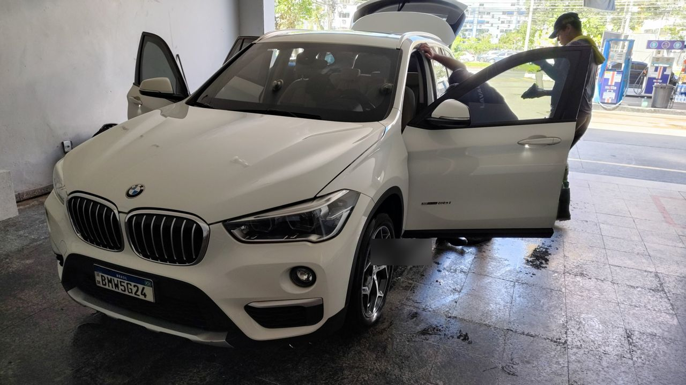
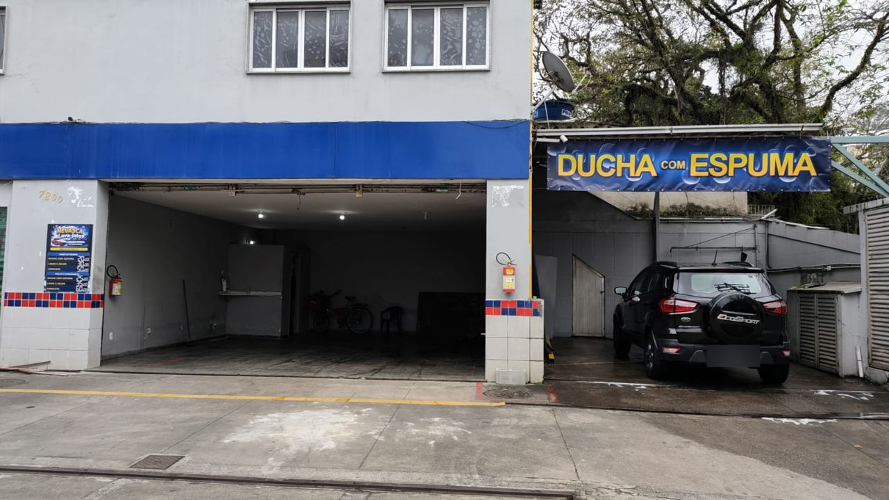

Ducha com espuma
R$ 20 a R$ 25
Lavagem externa: jatos de alta pressão, shampoo de qualidade, esfregação detalhada e enxágue.

WhatsAppSem agendamento: chegou, foi atendido, respeitando a ordem de chegada. Três unidades em Jacarepaguá e Ramos, todos os dias das 8h às 19h.

Cada lavagem inclui a anterior e acrescenta algo. Os valores são faixas: o preço exato depende da unidade e do porte do veículo.
R$ 20 a R$ 25
Lavagem externa: jatos de alta pressão, shampoo de qualidade, esfregação detalhada e enxágue.
R$ 35 a R$ 50
Lavagem externa e secagem detalhada.
R$ 60 a R$ 90
Lavagem externa, secagem detalhada, aspiração e pretinho nos pneus e plásticos externos. Desengraxante nas rodas, se o cliente quiser.
Cera Brilho: R$ 15. Adicional, aplicado com cera líquida durante a secagem.
R$ 80 a R$ 120
Componentes elétricos e centrais eletrônicas são isolados da água. Depois, desengraxante suave e pincelamento.
R$ 70 a R$ 100
O carro é elevado, lavado com alta pressão, recebe desincrustante para soltar lama e graxa e é enxaguado de novo.
Consulte o supervisor
Estofados e bancos, teto e colunas, tapetes e assoalho.
Motos: preço com o supervisor. SUV e caminhonete: tabela de valores disponível na unidade. Motor e chassi são feitos pela equipe com EPI.
De R$ 5 a R$ 20, conforme o serviço, em todas as unidades. Vale para Uber, 99 e inDrive: mostre ao supervisor a tela do app com seu login ativo.

Aplicação do shampoo na unidade Camorim.
A Nevasca nasceu da experiência de duas unidades que atendiam na Barra da Tijuca como JP Serviços de Lavagem, do Paulo. Com essas unidades fechadas para obras, criamos a marca Nevasca Lava-jato e levamos o mesmo cuidado para o Camorim, Ramos e CDD. A rede continua crescendo.
Todas abrem todos os dias, das 8h às 19h. O WhatsApp já vai com o nome da unidade escolhida.

Lavagens Ducha, Lavar e secar, Completa e Higienização.
Lavagens Ducha, Lavar e secar, Completa, motor e chassi.
Lavagens Ducha, Lavar e secar e Completa.
Não. O atendimento é imediato, por ordem de chegada.
Depende da fila, do serviço escolhido e do estado do veículo.
Sim, você pode esperar na unidade.
Sim. Por isso mostramos faixas de valor. O preço exato é confirmado na unidade ou pelo WhatsApp.
Sim. Para moto, o preço é confirmado com o supervisor. Para SUV e caminhonete, há uma tabela na unidade.
A Completa inclui, além da lavagem externa e da secagem detalhada, aspiração e pretinho nos pneus e plásticos externos. Também aplicamos desengraxante nas rodas, se você quiser.
Pix, cartão de débito e todos os cartões de crédito.
Chame no WhatsApp ou venha direto a uma das unidades.
Chamar no WhatsApp